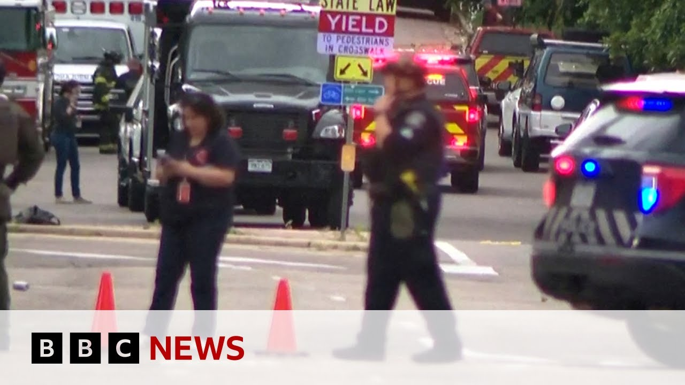

【科罗拉多州以色列人质集会：男子纵火致六人受伤 | BBC新闻】
Summary: Six people were injured in Colorado when a man attacked a Jewish group's march for Israeli hostages using a makeshift flamethrower and incendiary devices. The suspect, Muhammad Solomon, is in custody.
摘要： 科罗拉多州一名男子用临时火焰喷射器和燃烧装置袭击支持以色列人质的犹太团体游行，致六人受伤。嫌疑人穆罕默德·所罗门已被拘留。

⏱️ Estimated Reading Time: 3 min
We begin in the US state of Colorado where authorities there have confirmed six people have been injured by a makeshift flamethrower and incendiary devices targeted at a Jewish group holding a march in support of Israeli hostages.
我们首先来到美国科罗拉多州，当地当局证实，六人因临时火焰喷射器和燃烧装置受伤，这些装置针对的是举行游行支持以色列人质的犹太团体。
The suspect, 45-year-old Muhammad Solomon, is currently in police custody.
嫌疑人45岁的穆罕默德·所罗门目前已被警方拘留。
CBS correspondent Christian Benvdz has this report.
CBS记者克里斯蒂安·本维兹带来以下报道。
The attack happened early Sunday afternoon in front of the county courthouse in downtown Boulder where a march was taking place to raise awareness of Israeli hostages still being held in Gaza.
袭击发生在周日下午早些时候，地点是博尔德市中心县法院前，当时正在举行游行以提高人们对仍被扣押在加沙的以色列人质的关注。
Uh the initial callers indicated that there was a man with a weapon and that people were being set on fire.
最初的报警人称有一名持武器男子正在纵火焚烧人群。
According to Boulder police, multiple people were injured in the attack.
据博尔德警方称，多人在这起袭击中受伤。
Those injuries ranged from minor to serious.
伤情从轻微到严重不等。
When we arrived, we encountered uh multiple victims that were injured uh with uh injuries consistent with burns and other injuries.
我们抵达时遇到了多名伤者，伤势包括烧伤和其他伤害。
This was a beautiful Sunday afternoon in downtown Boulder on on Pearl Street.
这是博尔德市中心珍珠街一个美好的周日下午。
Uh and this act is unacceptable.
而这一行为是不可接受的。
Witnesses were shaken.
目击者感到震惊。
I came out, it was chaos.
我走出来时一片混乱。
People were arriving on the ground.
有人倒在地上。
It was it was traumatic to watch.
目睹这一幕令人痛苦。
We had seen burn marks on the ground.
我们看到了地上的烧焦痕迹。
Um there were uh Israeli pro protester flags on the ground and we saw a couple people getting wheeled out on um carts.
地上有支持以色列的抗议者旗帜，我们还看到几个人被推车运走。
Members of the Jewish community in Colorado have condemned the attack.
科罗拉多州的犹太社区成员谴责了这次袭击。
While FBI director Cash Patel said on social media it was a targeted terror attack.
而FBI局长卡什·帕特尔在社交媒体上称这是一起有针对性的恐怖袭击。
At a late night press conference, the FBI identified the suspect as Muhammad Solomon.
在深夜的新闻发布会上，FBI确认嫌疑人为穆罕默德·所罗门。
This attack happened at a regularly scheduled weekly peaceful event.
这起袭击发生在每周例行的和平活动中。
Witnesses are reporting that the subject used a makeshift flamethrower and threw an incendiary device into the crowd.
目击者报告称袭击者使用了临时火焰喷射器并向人群投掷燃烧装置。
The suspect was heard to yell free Palestine during the attack.
据称嫌疑人在袭击中高喊"解放巴勒斯坦"。
Police say it is not known if he acted alone or is part of a larger network.
警方表示尚不清楚他是单独行动还是属于某个更大组织。
Could he stand by Navididas CBS News?
请纳维迪达斯·CBS新闻跟进报道？